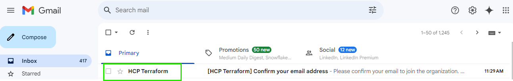
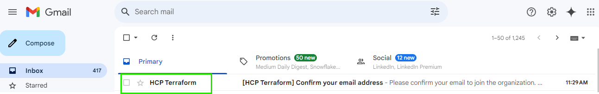

Create a Terraform account Refer Here

Go to your mail and select the mail received from HCP


Create an Organization shown in the below images
Create a Terraform account Refer Here
Go to your mail and select the mail received from HCP

Create an Organization shown in the below images


Publish the terraform modules

Choose a repository


Create a workspace and select the Project


Write a terraform module for creating VPC based on child module

terraform {
required_providers {
aws = {
source = "hashicorp/aws"
version = "5.69.0"
}
}
cloud {
organization = "GopiKrishna"
workspaces {
name = "terraform"
}
}
}
provider "aws" {
# Configuration options
region = "ap-south-1"
}
#
module "vpc" {
source = "app.terraform.io/GopiKrishna/vpc/aws"
version = "1.0.0"
vpc_configuration = {
cidr_block = "10.0.0.0/16"
instance_tenancy = "default"
enable_dns_hostnames = true
enable_dns_support = false
tags = {
Name = "three-tier-network"
Environment = "dev"
}
}
private_subnets = [
{
cidr_block = "10.0.1.0/24"
availability_zone = "ap-south-1a"
tags = {
Name = "app-1"
Environment = "dev"
}
},
{
cidr_block = "10.0.2.0/24"
availability_zone = "ap-south-1a"
tags = {
Name = "db-1"
Environment = "dev"
}
}
]
public_subnets = [
{
cidr_block = "10.0.0.0/24"
availability_zone = "ap-south-1a"
tags = {
Name = "web-1"
Environment = "dev"
}
}
]
is_nat_gateway_required = false
}
terraform init
Now execute the terraform plan

Open the terraform cloud and see the status


terraform apply

Check the state file


All resources are created
Destroy the all resources terraform destroy